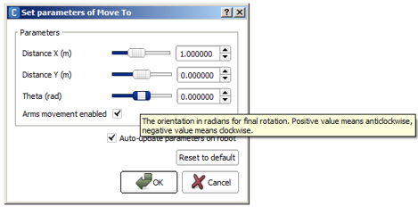
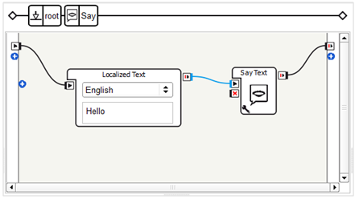
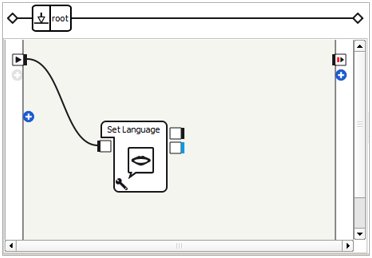
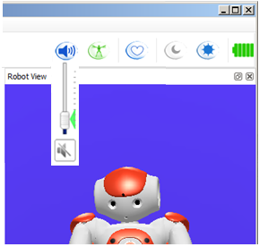

Your first steps in Choregraphe¶
How to make NAO do something¶
To make NAO do something with Choregraphe:
| Step | Action | For further details, see ... |
|---|---|---|
| Create a Behavior. | How to create a Behavior | |
| Connect Choregraphe to NAO. | How to connect your NAO | |
| If the behavior includes motion, then wake up NAO. | How to wake up your NAO | |
| Play the Behavior. | How to play a Behavior |
How to create a Behavior¶
To create a Behavior:
| Step | Action | Example: make your robot say “Hello!” |
|---|---|---|
| Select boxes from the Box libraries panel. | Select the Speech > Creation > Say box. | |
| Drag and drop them into the Flow diagram panel. | ||
| Connect them so as to define the sequence of action to perform. | Drag the mouse from the onStart input
of the behavior to the |
{kind=link}
How to connect your NAO¶
To connect Choregraphe to NAO:
| Step | Action |
|---|---|
Choose the Connection > Connect to menu. The Connect to panel is displayed. |
|
| Select your Robot, then click the Connect to button. |
For further details, see: Connecting Choregraphe to a robot.
How to wake up your NAO¶
To wake up NAO:
Click the Wake up button in the toolbar.
Why do I need to wake up NAO¶
Wake Up means set the Stiffness of all motors on. Additionally, if the robot is crouched, he also goes to the StandInit posture.
In Choregraphe, set the Stiffness or “enslave” is the action to provide power to the motors of your robot. When your NAO is not stiffened, its limbs are soft like a puppet, its motors do not have power. To execute behaviors and see the result on your connected robot, you have to stiffen it, giving power to the motors.
To go further¶
It is also possible to set the Stiffness, during the execution of a Behavior, to an intermediary value, as all actions don’t require the same strength. To do so, add the Set Stiffness box to your Behavior.
How to play a Behavior¶
To play a Behavior:
- Choose Connection > Play or
- Click
 Play button in the toolbar.
Play button in the toolbar.
The Behavior of your root Flow diagram is now executed by the robot you are connected to.
To go further¶
Once the Behavior has been played, you can also launch unconnected
boxes alone by double-clicking on their  onStart input.
onStart input.
Try other key behaviors¶
How to make NAO walk¶
To make NAO walk:
| Step | Action |
|---|---|
| Drag and drop the Movement > Navigation > Move To box. | |
Click the  Parameter button of the box. Parameter button of the box. |
|
Set the parameters. To read the full definition of each parameter, hold the pointer over it. 
|
|
| Click OK button. | |
| Connect the Behavior onStart Input to the
onStart Input of the Box. |
|
Click Your robot walks. |
{kind=link}
Go on and test the various parameters for the walk box.
To go further¶
Walking is very complicated movement that can’t be designed by keyframe animation. This is why we have developed specific tools that should help you. One of the main modules of the robot is ALMotion. For further details, see the NAOqi Motion.
How to make NAO say something¶
To make NAO say something different than hello:
| Step | Action |
|---|---|
| Drag and drop the Speech > Creation > Say box onto your Flow diagram. | |
Link it to the beginning of the root Behavior. Your Flow diagram should look like that: |
|
Double click the Say box in order to get into it. Your Flow diagram should look like that: The Say box has an intern Flow diagram gathering two boxes:
|
|
| Change the text in the Localized Text box to make NAO say what you want. | |
You can also change:
|
|
Click Your robot says your text. |
{kind=link}
To come back to the main Flow diagram, click the root on the Box path (see Flow diagram panel).
How to discover other boxes¶
To discover a box:
| Step | Action |
|---|---|
Select the box from the Box libraries panel. Read the description displayed at the bottom of the Box libraries panel. |
|
| Drag and drop it into the Flow diagram panel. | |
If there is one, click the Read the full definition of each parameter, by holding the pointer over it. |
|
| Explore each input and output of the box by holding the pointer over it. | |
| Double click the box and explore its content. |
Useful settings¶
How to change NAO language¶
 Cannot be tested on a simulated robot.
Cannot be tested on a simulated robot.
To change NAO language in Choregraphe:
| Step | Action |
|---|---|
| Drag and drop the Speech > Speech Settings > Set Language box onto your Flow diagram. | |
Link the box to the beginning of the root behavior. Your diagram should look like that:  |
|
| Click the Parameter button of the box. |
|
Select a language and click OK button. Note The chosen language must be installed on the robot. For further details, see: Language management. |
{kind=link}
Another way to change the language of the robot is to use the robot web page. For further details see: Web page Settings.
How to set NAO‘s volume¶
Cannot be tested on a simulated robot.
In Choregraphe, you have different possibilities to set the volume of your robot.
You can:
Click the Volume button located in the Toolbar.
This button displays a slider that allows you to set the volume.
Set the Volume using the NAO Web page or the Pepper Web page.
Use the Set Speaker Volume box.
{kind=link}
How to change NAO‘s active camera¶
Cannot be tested on a simulated robot.
To switch camera with Choregraphe, use the Select Camera box:
| Step | Action |
|---|---|
| Drag and drop the Vision > Select Camera box onto your Flow diagram. | |
| Play the behavior by clicking on the Play button: |
|
| Wait until Choregraphe has finished sending the behavior to the robot. | |
Double click on one or the other input of the box. You can see in the Video monitor panel that the camera has changed. To display the Video monitor panel, see How to display/hide panels section. |